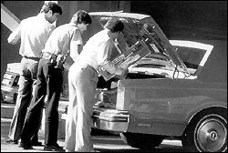

CHAPTER
FIVE
The Religious Technology Center
and the International Finance Police
As the Organization rapidly expands so will it
be a growing temptation for anti-survival elements to gain entry and infiltrate, and
attempts to plant will be made.
- L. RON HUBBARD, Policy
Letter "Security Risks & Infiltration," October 30, 1962
The organizational restructuring of Scientology
continued apace through 1982. On January 1, the Religious Technology Center (RTC) was
incorporated. RTC took over the trademarks of Dianetics and Scientology. David Mayo's
signature is on the incorporation papers, but he claims that the terms were altered after
he signed. David Miscavige was another of the seven signatories. Through the control of
the trademarks RTC could control Scientology, withdrawing the right of any intransigent
group to use such words as "Scientology" or "OT" in advertising, and
suing if the group continued to use them. There were hundreds of registered trademarks,
including the word "Happiness," the phrase "The friendliest place in the
whole world," and tens of Dianetic and Scientology symbols. The new rulers were
seeking to use laws relating to business to effect a total monopoly for their supposed
religion.
International Church management had been taken from
the Flag Bureau by the Commodore's Messengers Organization in 1979. The Guardian's Office
had been defeated and absorbed by the CMO without bloodshed in 1981. Author Services
Incorporated was waiting in the wings to license Hubbard's copyrights to Bridge
Publications and New Era Publications, which had separated from the Church, at least on
paper. The Church of Scientology International had come into being to assume the
management of the Orgs. By 1982 Scientology in the U.K. was already registered as the
Religious Education College Incorporated, with its headquarters in Australia. Continental
offices each had their own incorporation. It was a hasty attempt to divide the sinking
ship of the Church of Scientology of California into watertight compartments.
The CMO, acting on Hubbard's instructions, attacked
the mutinous Mission Holders. Those readmitted during the 1981 conferences were once again
declared Suppressive, and others were added to the list. Several previously untouched
Mission Holders were also declared Suppressive, Brown McKee among them. McKee had broken
one of the great taboos by making his complaints against Scientology public, speaking to
the press and to the Clearwater Commissioners.
Hubbard was in the habit of issuing a "Ron's
Journal" to the faithful at New Year and on his birthday. On March 13, 1982,
Scientologists who were attending birthday parties at Orgs and Missions the world over
heard Ron's Journal 34. It was called "The Future of Scientology," and
concentrated on supposed religious persecution:
Time and again since 1950, the vested interests
which pretend to run the world (for their own appetites and profit) have mounted
full-scale attacks. With a running dog press and slavish government agencies the forces of
evil have launched their lies and sought, by whatever twisted means, to check and destroy
Scientology. What is being decided in this arena is whether mankind has a chance to go
free or be smashed and tortured as an abject subject of the power elite.
Hubbard claimed that attacks upon Scientology were
doomed to fail because its opponents are "mad monkeys." Hubbard gave
Scientologists a new maxim: "If the papers say it, it isn't true." The issue
also hinted at some current catastrophe, saying "The last enemy attack is winding
down." It was Hubbard's way of expressing approval for the small group of new rulers.
Having taken over the Guardian's Office, and consigned
"mutinous" Mission Holders to the outer darkness, the CMO began an internal
purge. Long-term Messengers were "off-loaded." So savage was the purge that CMO
Int's own staff dwindled to less than twenty.
Author Services Incorporated is ostensibly a
non-Church organization set up to manage Hubbard's affairs as a writer. It was activated
in the spring of 1982. Battlefield Earth had been published by this time, and
Hubbard had written numerous film scripts intended for Hollywood movies, including the OT3
story, Revolt in the Stars. ASI also collected the author's royalties from the
books produced by the two Scientology Publications organizations.
David Miscavige resigned from the Sea Organization to
become Chairman of the Board at Author Services Incorporated. The directors of a large
share of Hubbard's ballooning personal fortune could not be seen to be members of the very
organization which would continue to enlarge that fortune. However, Miscavige maintained
his tight control of the Church. ASI was staffed solely with top Sea Org staff who had
been allowed to resign their billion-year contracts to join. Only those at Gilman knew
that ASI was actually the controlling group. This superiority was demonstrated when ASI
staff arrived and started issuing orders even to the Watchdog Committee.
Five of the seven incorporators of the non-profit
Religious Technology Center became ASI staff. ASI is a for-profit corporation, which
derives most of its income from the Scientology organizations controlled by the RTC.
In April 1982, David Mayo received a long dispatch
from Hubbard, copies of which were circulated to CMO executives. Stating that he
anticipated his own demise within the next five years, Hubbard gave the "Tech
hats" to Mayo for twenty to twenty-five years. This would give Hubbard time to
"find a new body," grow up and resume his Scientological responsibilities.
Giving Mayo the "Tech hats" meant that Mayo would decide what was
"Standard" Scientology, and what was "non-Standard" or
"squirrel" Scientology. Mayo would be the final arbiter of Hubbard's
"Technology" of the human mind and spirit. This appeared to be a position of
tremendous power, because Mayo could not be removed. Others could ostensibly control the
assets of Scientology, but Mayo could adjudge people "out-Tech," and have them
cast out of the Church itself. On Hubbard's orders, Mayo set about creating yet another
corporation for his Office of the Senior Case Supervisor International. His twenty to
twenty-five year posting was shorter even than Executive Director Bill Franks' posting
"for life." Mayo had only a few months left.
In June, yet another Commanding Officer of the CMO
fell. John Nelson was replaced by Miscavige's nineteen-year-old protégé, Marc Yaeger.
Yaeger looks old for his years, in part because he is prematurely balding. While still a
teenager he became the senior officer in the management structure of Scientology, at least
in name.
Yaeger had risen far from his start as video-machine
operator on the Tech films. "Video-machine operator" is a rather grandiose title
for someone who pushes the button to start and stop the recorder. Yaeger joined the Sea
Org when he was fifteen, so has minimal formal education. The same holds for most CMO
staff. Indeed, most of the original Messengers were even younger when they were taken away
from their schooling.
Ex-CO CMO John Nelson was assigned to physical labor.
Rumor had it that Miscavige's All Clear Unit would quash the legal threats against Hubbard
by the end of 1982, so preparations were made at Gilman Hot Springs for Hubbard's return.
The Founder's love of the sea is well attested, so to welcome him the CMO decided to
construct a replica of the top and interior of a full-scale, three-masted clipper ship,
some fifty miles inland. The materials for the ship cost about half a million dollars, but
Sea Org labor was cheap at less than $20 a week for a 100-hour week. Miscavige was
ostensibly in control of Hubbard's royalties, Hubbard's Church, the Guardian's Office,
and, until the Commodore's triumphant return, was the master of a landlocked clipper ship,
the Star of California.
John Nelson has described his cloak and dagger
meetings with Pat Broeker, who delivered orders from Hubbard to Gilman. These orders came
in the form of tapes from Hubbard, which would be transcribed as "Advices." This
was designed to perpetuate the fiction that Hubbard was not the head of the Church. In
theory, the Church could take or leave his "Advices." In practice, these Hubbard
orders were carried out to the letter.
 In June 1982, Wendell Reynolds became the
first International Finance Dictator, and was sent to Florida, where he recruited staff
for the International Finance Police (seen preparing for an "inspection,"
right). The titles reflect the mood of the time.
A peculiar Hubbard Bulletin called "Pain and
Sex" was released in August. In the Bulletin the seventy-one-year-old Commodore
released his newest discovery: "Pain and sex were the INVENTED tools of
degradation." (Emphasis in original.) 1
Hubbard alleged that psychiatrists, "who have been
on the [time] track a long time and are the sole cause of decline in this universe"
had invented sex as a means of entrapment eons ago. As a result of Hubbard's diatribe,
some Scientologists stopped having sexual intercourse with their spouses.
At the end of August, David Mayo and his entire staff
were removed from their positions, and put under guard at Gilman. The next month, Franks'
successor as Executive Director International, Kerry Gleeson, was removed, and replaced by
the head of Scientology's operations in continental Europe, Guillaume Lesevre. In October
several other well known, long-term Sea Org members were rounded up and taken to Gilman
Hot Springs. One of these, Jay Hurwitz, described the experience in some detail:
The first day I arrived at INT [International
HQ, Gilman] I had a Nazi style "Interrogation" sec check which was done by the
highest authorities of Scientology. There were four interrogators present in the room
firing questions at me while I was on a meter.
They were: David Miscavige, one of the three
highest execs running Scientology today; Steve Marlowe, Executive Director of RTC; Marc
Yaeger, CO CMO INT; Vicky Aznaran, Deputy Inspector General.
Their first question to me was "Who is
paying you?"... I was then subjected to enormous duress with statements like "we
will stay here all night until you tell us who is running
you" (in other words I was
a plant, an enemy agent). Miscavige said he would declare me [Suppressive] on the spot if
I didn't tell him who my operations man was ....
For the first five days I was at INT I was kept
locked up under guard with three other people (females) . . . for the first two days, we
were kept in an office ....For the next three days, we were kept confined in a toilet,
under guard ....We used the same toilet facilities in the presence of one another. 2
Hurwitz accused Miscavige of physically assaulting
three people during the course of his investigation. A Committee of Evidence was convened
and lasted for several weeks. Hurwitz was one of those who left before the Findings and
Recommendations of that "Comm Ev" were published in January 1983.
While so many former top executives of Scientology
were confined at Gilman Hot Springs, the new management took its final strike at the power
of the Mission Holders.
Howard "Homer" Schomer, who was the Treasury
Secretary of Author Services Incorporated, has testified that money was being channeled
frantically into Hubbard's bank accounts during 1982. Schomer was in a position to know
since he made the transfers. He has said that during his six months at ASI, about $34
million was paid into Hubbard's accounts. Schomer says this money came mostly from the
Church, rather than from book royalties. Yet again Scientology was billed retroactively by
Hubbard. Orgs were charged for their past use of taped lectures. They were charged for
their past use of Hubbard courses. Schomer says there was a target figure of $85 million
by the end of 1982. If this figure was achieved, there would be fat bonuses for ASI staff.
Probably acting on Hubbard's orders, the new management called the Mission Holders to a
conference at the San Francisco Hilton Hotel on October 17, 1982. At this fateful meeting,
any degree of independence the Mission Holders retained was torn away from them. The
meeting was also part of the desperate attempt to raise the targeted $85 million.
FOOTNOTES
Sources: John Nelson;
interviews with two former CMO executives; Howard Schomer testimony in Christofferson
Titchbourne vs. Church of Scientology Mission of Davis et al., State of Oregon Circuit
Court, Multnomah County, case A7704-05184; Schomer testimony in Church of Scientology
of California vs. Gerald Armstrong, Superior Court for the County of Los Angeles,
case no. C 420153
1. HCOB, "Pain and
Sex", 26 August 1982
2. Jay Hurwitz letter to
David Banks, 1983; interviews with Hurwitz, East Grinstead, 1983 & 1986 |